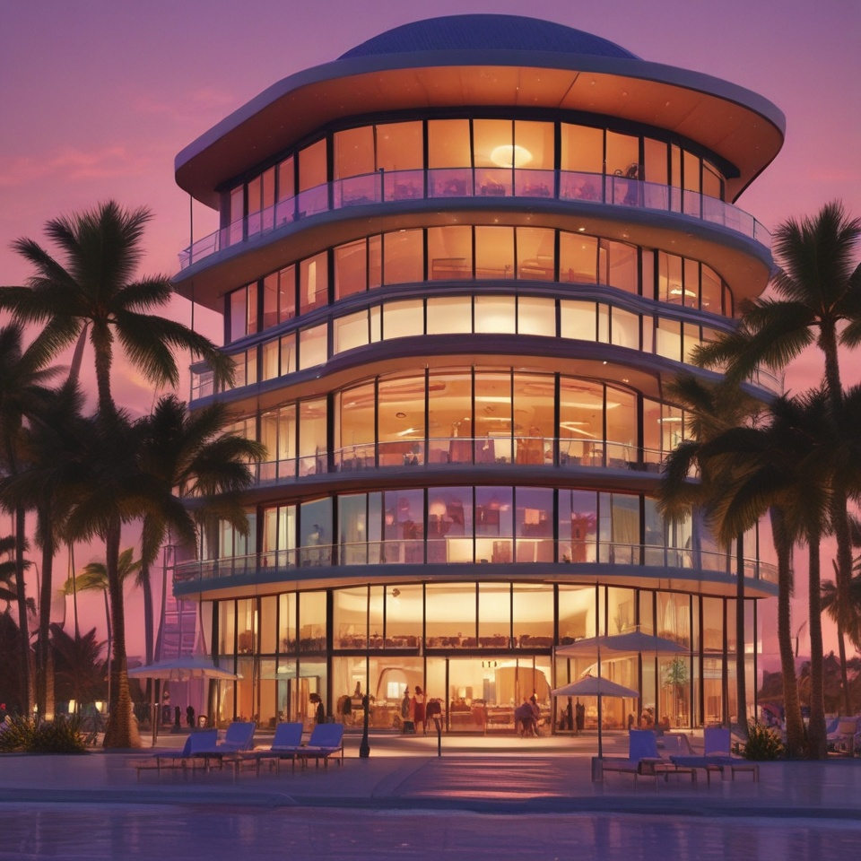

TANITI ISLAND
LODGINGS


Beachside Bungalows
A beachside bungalow is a compact, single-story cottage or house located near the shoreline, often featuring a porch or veranda. These homes usually have an open-concept layout and large windows to enhance scenic ocean or landscape views. They commonly exude a warm, rustic appeal and may incorporate design elements such as dormer windows and roof overhangs.
Scenic Hotels
Taniti scenic hotel options offer a luxurious escape surrounded by stunning natural beauty. These hotels often feature open-air architecture, lush gardens, and private beaches, providing breathtaking views of crystal-clear waters and vibrant sunsets. Guests can enjoy spacious pent-houses or family-style getaways, often with direct access to the beach, infinity pools, and outdoor terraces. With their serene ambiance and picturesque settings, these hotels create the perfect oasis for relaxation and adventure amid the tropical paradise.
AirBnB
An Airbnb experience on a small island offers a unique and immersive getaway, allowing guests to enjoy the authentic local culture and natural beauty. Stay in cozy, charming accommodations nestled amidst lush landscapes or beachfront settings, and explore the island’s hidden gems. From guided nature walks and water activities to local cooking classes and cultural tours, these experiences provide a personalized and memorable way to connect with the island’s tranquil environment and vibrant community.
Reserve any of your lodgings easily:
Making a reservation is simple. All of our booking packages include your choice of accommodation. The hardest choices is having to choose when you'll have to go back home again. We look forward to hosting you soon! ✈ Booking
1 Paradise Way, Taniti 12345-1234
+99-555-555-5555